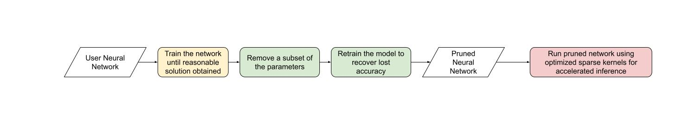

（原型）通过半结构化（2:4）稀疏加速 BERT ¶
创建于：2025 年 4 月 1 日 | 最后更新：2025 年 4 月 1 日 | 最后验证：2024 年 11 月 5 日
作者：蔡杰
与其他形式的稀疏性一样，半结构化稀疏性是一种模型优化技术，旨在通过牺牲一些模型精度来降低神经网络的内存开销和延迟。它也被称为细粒度结构化稀疏性或 2:4 结构化稀疏性。
半结构化稀疏性得名于其独特的稀疏模式，其中每 2n 个元素中有 n 个被剪枝。我们最常见的是 n=2，因此是 2:4 稀疏性。半结构化稀疏性特别有趣，因为它可以在 GPU 上高效加速，并且与其他稀疏模式相比，不会降低模型精度那么严重。
随着半结构化稀疏性支持的引入，可以在不离开 PyTorch 的情况下剪枝和加速半结构化稀疏模型。我们将在本教程中解释这个过程。

到本教程结束时，我们将把 BERT 问答模型稀疏化为 2:4 稀疏，微调它以恢复近所有的 F1 损失（86.92 密集与 86.48 稀疏）。最后，我们将加速这个 2:4 稀疏模型进行推理，实现 1.3 倍的速度提升。
需求
PyTorch >= 2.1
需要 NVIDIA GPU，支持半结构化稀疏性（计算能力 8.0+）。
备注
本教程是为初学者设计的，旨在介绍半结构化稀疏性/一般稀疏性。对于已有 2:4 稀疏模型的用户，使用 to_sparse_semi_structured 加速 nn.Linear 层的推理就像：
import torch
from torch.sparse import to_sparse_semi_structured, SparseSemiStructuredTensor
from torch.utils.benchmark import Timer
SparseSemiStructuredTensor._FORCE_CUTLASS = True
# mask Linear weight to be 2:4 sparse
mask = torch.Tensor([0, 0, 1, 1]).tile((3072, 2560)).cuda().bool()
linear = torch.nn.Linear(10240, 3072).half().cuda().eval()
linear.weight = torch.nn.Parameter(mask * linear.weight)
x = torch.rand(3072, 10240).half().cuda()
with torch.inference_mode():
dense_output = linear(x)
dense_t = Timer(stmt="linear(x)",
globals={"linear": linear,
"x": x}).blocked_autorange().median * 1e3
# accelerate via SparseSemiStructuredTensor
linear.weight = torch.nn.Parameter(to_sparse_semi_structured(linear.weight))
sparse_output = linear(x)
sparse_t = Timer(stmt="linear(x)",
globals={"linear": linear,
"x": x}).blocked_autorange().median * 1e3
# sparse and dense matmul are numerically equivalent
assert torch.allclose(sparse_output, dense_output, atol=1e-3)
print(f"Dense: {dense_t:.3f}ms Sparse: {sparse_t:.3f}ms | Speedup: {(dense_t / sparse_t):.3f}x")
在 A100 80GB 上，我们观察到：稠密：0.870ms 稀疏：0.630ms | 加速比：1.382x
半结构化稀疏性解决了什么问题？
稀疏性的总体动机很简单：如果你的网络中有零，你可以避免存储/计算这些参数。然而，稀疏性的具体实现很复杂。将参数置零并不会立即影响我们模型的延迟/内存开销。
这是因为密集张量仍然包含被剪枝（零）的元素，密集矩阵乘法内核仍然会操作这些元素。为了实现性能提升，我们需要用稀疏内核替换密集内核，这些内核会跳过涉及剪枝元素的计算。
为了做到这一点，这些内核在稀疏矩阵上工作，稀疏矩阵不存储被剪枝的元素，并以压缩格式存储指定的元素。
对于半结构化稀疏性，我们存储原始参数的一半以及一些关于元素排列的压缩元数据。
存在许多不同的稀疏布局，每种布局都有其自身的优缺点。2:4 半结构化稀疏布局特别有趣，原因有两个：1. 与之前的稀疏格式不同，半结构化稀疏性被设计为可以在 GPU 上高效加速。
2020 年，NVIDIA 在 Ampere 架构中引入了对半结构化稀疏性的硬件支持，并通过 CUTLASS/ cuSPARSELt 发布了快速稀疏内核。
同时，与其它稀疏格式相比，半结构化稀疏性对模型准确性的影响通常较轻。NVIDIA 在其白皮书中表明，将模型进行一次幅度剪枝，变为 2:4 稀疏，然后重新训练模型，可以得到几乎相同的模型准确性。
半结构化存在于一个甜蜜点，在更低的稀疏度水平（50%）下提供 2 倍（理论）的速度提升，同时仍然足够细粒度以保持模型精度。
网络 |
数据集 |
指标 |
稠密 FP16 |
稀疏 FP16 |
|---|---|---|---|---|
ResNet-50 |
ImageNet |
Top-1 |
76.1 |
76.2 |
ResNeXt-101_32x8d |
ImageNet |
Top-1 |
79.3 |
79.3 |
Xception |
ImageNet |
Top-1 |
79.2 |
79.2 |
SSD-RN50 |
COCO2017 |
bbAP |
24.8 |
24.8 |
MaskRCNN-RN50 |
COCO2017 |
bbAP |
37.9 |
37.9 |
FairSeq Transformer |
EN-DE WMT14 |
BLEU |
28.2 |
28.5 |
BERT-Large |
SQuAD v1.1 |
F1 |
91.9 |
91.9 |
半结构化稀疏性在流程方面还有一个额外优势。因为稀疏度固定在 50%，所以将模型稀疏化的问题分解为两个独立的子问题更容易：
准确性 - 我们如何找到一组 2:4 的稀疏权重，以最小化我们模型的准确度下降？
性能 - 我们如何加速我们的 2:4 稀疏权重以进行推理并减少内存开销？
这两个问题之间的自然切换点是零填充的密集张量。我们的推理解决方案旨在压缩和加速这种格式的张量。我们预计会有许多用户提出定制的掩码解决方案，因为这是一个活跃的研究领域。
现在我们对半结构化稀疏性有了更多的了解，让我们将其应用于在 SQuAD 问答任务上训练的 BERT 模型。
简介 & 设置
让我们从导入所有需要的包开始。
import collections
import datasets
import evaluate
import numpy as np
import torch
import torch.utils.benchmark as benchmark
from torch import nn
from torch.sparse import to_sparse_semi_structured, SparseSemiStructuredTensor
from torch.ao.pruning import WeightNormSparsifier
import transformers
# force CUTLASS use if cuSPARSELt is not available
SparseSemiStructuredTensor._FORCE_CUTLASS = True
torch.manual_seed(100)
我们还需要定义一些针对当前数据集/任务的辅助函数。这些函数是从这个 huggingface 课程中改编的，作为参考。
def preprocess_validation_function(examples, tokenizer):
inputs = tokenizer(
[q.strip() for q in examples["question"]],
examples["context"],
max_length=384,
truncation="only_second",
return_overflowing_tokens=True,
return_offsets_mapping=True,
padding="max_length",
)
sample_map = inputs.pop("overflow_to_sample_mapping")
example_ids = []
for i in range(len(inputs["input_ids"])):
sample_idx = sample_map[i]
example_ids.append(examples["id"][sample_idx])
sequence_ids = inputs.sequence_ids(i)
offset = inputs["offset_mapping"][i]
inputs["offset_mapping"][i] = [
o if sequence_ids[k] == 1 else None for k, o in enumerate(offset)
]
inputs["example_id"] = example_ids
return inputs
def preprocess_train_function(examples, tokenizer):
inputs = tokenizer(
[q.strip() for q in examples["question"]],
examples["context"],
max_length=384,
truncation="only_second",
return_offsets_mapping=True,
padding="max_length",
)
offset_mapping = inputs["offset_mapping"]
answers = examples["answers"]
start_positions = []
end_positions = []
for i, (offset, answer) in enumerate(zip(offset_mapping, answers)):
start_char = answer["answer_start"][0]
end_char = start_char + len(answer["text"][0])
sequence_ids = inputs.sequence_ids(i)
# Find the start and end of the context
idx = 0
while sequence_ids[idx] != 1:
idx += 1
context_start = idx
while sequence_ids[idx] == 1:
idx += 1
context_end = idx - 1
# If the answer is not fully inside the context, label it (0, 0)
if offset[context_start][0] > end_char or offset[context_end][1] < start_char:
start_positions.append(0)
end_positions.append(0)
else:
# Otherwise it's the start and end token positions
idx = context_start
while idx <= context_end and offset[idx][0] <= start_char:
idx += 1
start_positions.append(idx - 1)
idx = context_end
while idx >= context_start and offset[idx][1] >= end_char:
idx -= 1
end_positions.append(idx + 1)
inputs["start_positions"] = start_positions
inputs["end_positions"] = end_positions
return inputs
def compute_metrics(start_logits, end_logits, features, examples):
n_best = 20
max_answer_length = 30
metric = evaluate.load("squad")
example_to_features = collections.defaultdict(list)
for idx, feature in enumerate(features):
example_to_features[feature["example_id"]].append(idx)
predicted_answers = []
# for example in tqdm(examples):
for example in examples:
example_id = example["id"]
context = example["context"]
answers = []
# Loop through all features associated with that example
for feature_index in example_to_features[example_id]:
start_logit = start_logits[feature_index]
end_logit = end_logits[feature_index]
offsets = features[feature_index]["offset_mapping"]
start_indexes = np.argsort(start_logit)[-1 : -n_best - 1 : -1].tolist()
end_indexes = np.argsort(end_logit)[-1 : -n_best - 1 : -1].tolist()
for start_index in start_indexes:
for end_index in end_indexes:
# Skip answers that are not fully in the context
if offsets[start_index] is None or offsets[end_index] is None:
continue
# Skip answers with a length that is either < 0
# or > max_answer_length
if (
end_index < start_index
or end_index - start_index + 1 > max_answer_length
):
continue
answer = {
"text": context[
offsets[start_index][0] : offsets[end_index][1]
],
"logit_score": start_logit[start_index] + end_logit[end_index],
}
answers.append(answer)
# Select the answer with the best score
if len(answers) > 0:
best_answer = max(answers, key=lambda x: x["logit_score"])
predicted_answers.append(
{"id": example_id, "prediction_text": best_answer["text"]}
)
else:
predicted_answers.append({"id": example_id, "prediction_text": ""})
theoretical_answers = [
{"id": ex["id"], "answers": ex["answers"]} for ex in examples
]
return metric.compute(predictions=predicted_answers, references=theoretical_answers)
现在这些函数已经定义好了，我们只需要一个额外的辅助函数，这个函数将帮助我们评估我们的模型。
def measure_execution_time(model, batch_sizes, dataset):
dataset_for_model = dataset.remove_columns(["example_id", "offset_mapping"])
dataset_for_model.set_format("torch")
model.cuda()
batch_size_to_time_sec = {}
for batch_size in batch_sizes:
batch = {
k: dataset_for_model[k][:batch_size].to(model.device)
for k in dataset_for_model.column_names
}
with torch.inference_mode():
timer = benchmark.Timer(
stmt="model(**batch)", globals={"model": model, "batch": batch}
)
p50 = timer.blocked_autorange().median * 1000
batch_size_to_time_sec[batch_size] = p50
return batch_size_to_time_sec
我们将首先加载我们的模型和分词器，然后设置我们的数据集。
# load model
model_name = "bert-base-cased"
tokenizer = transformers.AutoTokenizer.from_pretrained(model_name)
model = transformers.AutoModelForQuestionAnswering.from_pretrained(model_name)
print(f"Loading tokenizer: {model_name}")
print(f"Loading model: {model_name}")
# set up train and val dataset
squad_dataset = datasets.load_dataset("squad")
tokenized_squad_dataset = {}
tokenized_squad_dataset["train"] = squad_dataset["train"].map(
lambda x: preprocess_train_function(x, tokenizer), batched=True
)
tokenized_squad_dataset["validation"] = squad_dataset["validation"].map(
lambda x: preprocess_validation_function(x, tokenizer),
batched=True,
remove_columns=squad_dataset["train"].column_names,
)
data_collator = transformers.DataCollatorWithPadding(tokenizer=tokenizer)
接下来，我们将在 SQuAD 上快速训练我们模型的基线。这个任务要求我们的模型在给定上下文（维基百科文章）中识别出回答给定问题的文本片段。运行以下代码给我一个 86.9 的 F1 分数。这相当接近报道的 NVIDIA 分数，差异可能是由于 BERT-base 与 BERT-large 或微调超参数。
training_args = transformers.TrainingArguments(
"trainer",
num_train_epochs=1,
lr_scheduler_type="constant",
per_device_train_batch_size=64,
per_device_eval_batch_size=512,
)
trainer = transformers.Trainer(
model,
training_args,
train_dataset=tokenized_squad_dataset["train"],
eval_dataset=tokenized_squad_dataset["validation"],
data_collator=data_collator,
tokenizer=tokenizer,
)
trainer.train()
# batch sizes to compare for eval
batch_sizes = [4, 16, 64, 256]
# 2:4 sparsity require fp16, so we cast here for a fair comparison
with torch.autocast("cuda"):
with torch.inference_mode():
predictions = trainer.predict(tokenized_squad_dataset["validation"])
start_logits, end_logits = predictions.predictions
fp16_baseline = compute_metrics(
start_logits,
end_logits,
tokenized_squad_dataset["validation"],
squad_dataset["validation"],
)
fp16_time = measure_execution_time(
model,
batch_sizes,
tokenized_squad_dataset["validation"],
)
print("fp16", fp16_baseline)
print("cuda_fp16 time", fp16_time)
# fp16 {'exact_match': 78.53358561967833, 'f1': 86.9280493093186}
# cuda_fp16 time {4: 10.927572380751371, 16: 19.607915310189128, 64: 73.18846387788653, 256: 286.91255673766136}
对 BERT 进行剪枝以成为 2:4 稀疏 ¶
现在我们有了基线，是时候修剪 BERT 了。有很多不同的修剪策略，但其中最常见的一种是幅度修剪，它试图移除具有最低 L1 范数的权重。幅度修剪被 NVIDIA 在所有结果中使用，并且是一个常见的基线。
要完成这个任务，我们将使用 torch.ao.pruning 包，该包包含一个权重范数（幅度）稀疏化器。这些稀疏化器通过应用掩码参数化来对模型的权重张量进行操作。这使得它们可以通过掩码掉剪枝权重来模拟稀疏性。
我们还必须决定对模型的哪些层应用稀疏性，在这个例子中是对所有的 nn.Linear 层，除了任务特定的 head 输出。这是因为半结构化稀疏性有形状约束，而任务特定的 nn.Linear 层不满足这些约束。
sparsifier = WeightNormSparsifier(
# apply sparsity to all blocks
sparsity_level=1.0,
# shape of 4 elemens is a block
sparse_block_shape=(1, 4),
# two zeros for every block of 4
zeros_per_block=2
)
# add to config if nn.Linear and in the BERT model.
sparse_config = [
{"tensor_fqn": f"{fqn}.weight"}
for fqn, module in model.named_modules()
if isinstance(module, nn.Linear) and "layer" in fqn
]
模型剪枝的第一步是插入参数化以掩码模型的权重。这是通过准备步骤完成的。每次我们尝试访问 .weight 时，都会得到 mask * weight 。
# Prepare the model, insert fake-sparsity parameterizations for training
sparsifier.prepare(model, sparse_config)
print(model.bert.encoder.layer[0].output)
# BertOutput(
# (dense): ParametrizedLinear(
# in_features=3072, out_features=768, bias=True
# (parametrizations): ModuleDict(
# (weight): ParametrizationList(
# (0-5): 6 x FakeSparsity()
# )
# )
# )
# (LayerNorm): LayerNorm((768,), eps=1e-12, elementwise_affine=True)
# (dropout): Dropout(p=0.1, inplace=False)
# )
然后，我们将执行一次单独的剪枝步骤。所有剪枝器都实现了一个 update_mask() 方法，该方法根据剪枝器的实现逻辑更新掩码。步骤方法调用 update_mask 函数，以稀疏配置中指定的权重为参数。
我们还将评估模型，以展示零样本剪枝（无需微调/重新训练）的精度下降。
sparsifier.step()
with torch.autocast("cuda"):
with torch.inference_mode():
predictions = trainer.predict(tokenized_squad_dataset["validation"])
pruned = compute_metrics(
*predictions.predictions,
tokenized_squad_dataset["validation"],
squad_dataset["validation"],
)
print("pruned eval metrics:", pruned)
# pruned eval metrics: {'exact_match': 40.59602649006622, 'f1': 56.51610004515979}
在这个状态下，我们可以开始微调模型，更新那些不会被剪枝的元素，以更好地补偿精度损失。一旦我们达到满意的状态，我们可以调用 squash_mask 来融合掩码和权重。这将移除参数化，我们剩下的是一个零值的 2:4 密集模型。
trainer.train()
sparsifier.squash_mask()
torch.set_printoptions(edgeitems=4)
print(model.bert.encoder.layer[0].intermediate.dense.weight)
# Parameter containing:
# tensor([[ 0.0000, -0.0237, 0.0000, 0.0130, ..., -0.0462, -0.0000, 0.0000, -0.0272],
# [ 0.0436, -0.0000, -0.0000, 0.0492, ..., -0.0000, 0.0844, 0.0340, -0.0000],
# [-0.0302, -0.0350, 0.0000, 0.0000, ..., 0.0303, 0.0175, -0.0000, 0.0000],
# [ 0.0000, -0.0000, -0.0529, 0.0327, ..., 0.0213, 0.0000, -0.0000, 0.0735],
# ...,
# [ 0.0000, -0.0000, -0.0258, -0.0239, ..., -0.0000, -0.0000, 0.0380, 0.0562],
# [-0.0432, -0.0000, 0.0000, -0.0598, ..., 0.0000, -0.0000, 0.0262 -0.0227],
# [ 0.0244, 0.0921, -0.0000, -0.0000, ..., -0.0000, -0.0784, 0.0000, 0.0761],
# [ 0.0000, 0.0225, -0.0395, -0.0000, ..., -0.0000, 0.0684, -0.0344, -0.0000]], device='cuda:0', requires_grad=True)
加速 2:4 稀疏模型进行推理 ——–i———————————— 现在我们有了这种格式的模型，我们可以像 QuickStart 指南中一样加速它进行推理。
model = model.cuda().half()
# accelerate for sparsity
for fqn, module in model.named_modules():
if isinstance(module, nn.Linear) and "layer" in fqn:
module.weight = nn.Parameter(to_sparse_semi_structured(module.weight))
with torch.inference_mode():
predictions = trainer.predict(tokenized_squad_dataset["validation"])
start_logits, end_logits = predictions.predictions
metrics_sparse = compute_metrics(
start_logits,
end_logits,
tokenized_squad_dataset["validation"],
squad_dataset["validation"],
)
print("sparse eval metrics: ", metrics_sparse)
sparse_perf = measure_execution_time(
model,
batch_sizes,
tokenized_squad_dataset["validation"],
)
print("sparse perf metrics: ", sparse_perf)
# sparse eval metrics: {'exact_match': 78.43897824030275, 'f1': 86.48718950090766}
# sparse perf metrics: {4: 12.621004460379481, 16: 15.368514601141214, 64: 58.702805917710066, 256: 244.19364519417286}
在进行幅度剪枝后重新训练我们的模型，已经恢复了模型剪枝时丢失的几乎所有 F1 分数。同时，对于 bs=16，我们实现了 1.28 倍的速度提升。请注意，并非所有形状都适合性能提升。当批量大小较小且在计算稀疏内核上花费的时间有限时，它们可能比它们的密集版本要慢。
指标 |
fp16 |
2:4 稀疏 |
delta / 加速 |
|---|---|---|---|
精确匹配（%） |
78.53 |
78.44 |
-0.09 |
F1（%） |
86.93 |
86.49 |
-0.44 |
时间（bs=4） |
10.93 |
12.62 |
0.87 倍 |
时间（bs=16） |
19.61 |
15.37 |
1.28 倍 |
时间（bs=64） |
73.19 |
58.70 |
1.25 倍 |
时间（bs=256） |
286.91 |
244.19 |
1.18 倍 |
结论 ¶
在本教程中，我们展示了如何剪枝 BERT 以实现 2:4 稀疏，以及如何加速 2:4 稀疏模型进行推理。通过利用我们的 SparseSemiStructuredTensor 子类，我们能够实现比 fp16 基线 1.3 倍的速度提升。我们还展示了 2:4 稀疏的优势，通过微调 BERT 恢复任何丢失的 F1（86.92 稠密 vs 86.48 稀疏）。